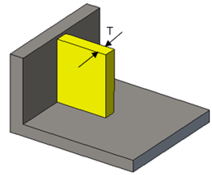
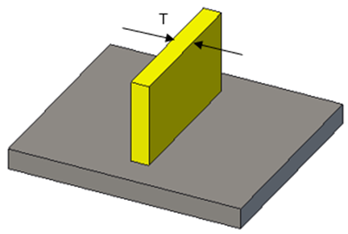
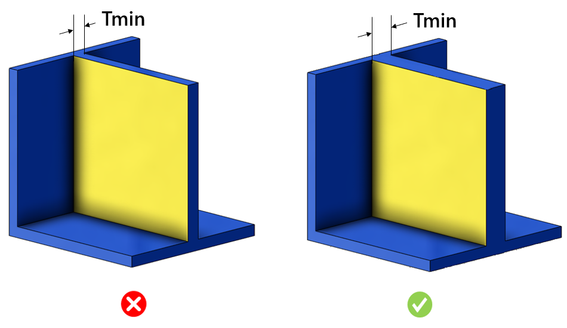

本ルールは、Fusion Deposition Modeling（FDM）、Stereolithography（SLA）、Selective Laser Sintering（SLS）など、異なる積層造形プロセスに基づいて、支持壁および非支持壁の最小肉厚条件をチェックします。
使用するプロセスに応じて、支持壁および非支持壁の最小肉厚を維持する必要があります。薄肉壁は、冷却工程における不均一な収縮により反りが発生しやすくなります。樹脂が乾燥または硬化する前に曲がってしまい、それを保持するために追加のサポートが必要となります。
Fusion Deposition Modeling（FDM） ― 支持壁および非支持壁の最小肉厚は 0.8 mm とする必要があります。
Stereolithography（SLA） ― 支持壁の最小肉厚は 0.5 mm、非支持壁の最小肉厚は 1.0 mm とする必要があります。
Selective Laser Sintering（SLS） ― 支持壁の最小肉厚は 0.7 mm とする必要があります。
ルール構成では、Fusion Deposition Modeling、Stereolithography、Selective Laser Sintering などの製造プロセスを設定し、それぞれに対応する支持壁および非支持壁の最小肉厚値を設定できます。
|
 |
 |
|
支持壁 （少なくとも 2 辺以上が造形物の他の部分と接続されている壁） |
非支持壁 （2 辺未満しか造形物の他の部分と接続されていない壁） |

Tmin = 最小肉厚